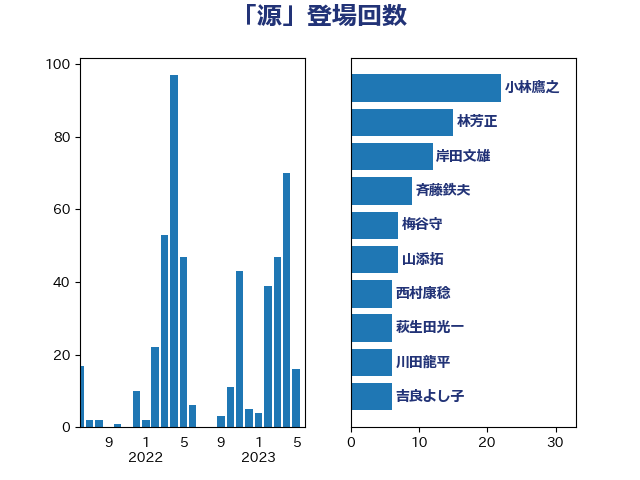

単語「源」

| 小林鷹之 | 自由民主党 | 22 回 |
| 林芳正 | 自由民主党 | 15 回 |
| 岸田文雄 | 自由民主党 | 12 回 |
| 斉藤鉄夫 | 公明党 | 9 回 |
| 梅谷守 | 立憲民主党 | 7 回 |
| 山添拓 | 日本共産党 | 7 回 |
| 西村康稔 | 自由民主党 | 6 回 |
| 萩生田光一 | 自由民主党 | 6 回 |
| 川田龍平 | 立憲民主党 | 6 回 |
| 吉良よし子 | 日本共産党 | 6 回 |
| 浜田聡 | NHK党 | 5 回 |
| 鈴木俊一 | 自由民主党 | 4 回 |
| 野村哲郎 | 自由民主党 | 4 回 |
| 谷公一 | 自由民主党 | 4 回 |
| 細田健一 | 自由民主党 | 4 回 |
| 紙智子 | 日本共産党 | 4 回 |
| 山下芳生 | 日本共産党 | 4 回 |
| 城井崇 | 立憲民主党 | 4 回 |
| 仁比聡平 | 日本共産党 | 4 回 |
| 高橋千鶴子 | 日本共産党 | 3 回 |
| 金子恵美 | 立憲民主党 | 3 回 |
| 足立敏之 | 自由民主党 | 3 回 |
| 藤木眞也 | 自由民主党 | 3 回 |
| 篠原孝 | 立憲民主党 | 3 回 |
| 浜野喜史 | 国民民主党 | 3 回 |
| 池下卓 | 日本維新の会 | 3 回 |
| 梅村聡 | 日本維新の会 | 3 回 |
| 松本剛明 | 自由民主党 | 3 回 |
| 本庄知史 | 立憲民主党 | 3 回 |
| 岡田直樹 | 自由民主党 | 3 回 |
| 岡本あき子 | 立憲民主党 | 3 回 |
| 山谷えり子 | 自由民主党 | 3 回 |
| 宮本徹 | 日本共産党 | 3 回 |
| 大野敬太郎 | 自由民主党 | 3 回 |
| 中山展宏 | 自由民主党 | 3 回 |
| 馬場雄基 | 立憲民主党 | 2 回 |
| 音喜多駿 | 日本維新の会 | 2 回 |
| 長峯誠 | 自由民主党 | 2 回 |
| 長友慎治 | 国民民主党 | 2 回 |
| 金子恭之 | 自由民主党 | 2 回 |
| 金城泰邦 | 公明党 | 2 回 |
| 里見隆治 | 公明党 | 2 回 |
| 輿水恵一 | 公明党 | 2 回 |
| 谷田川元 | 立憲民主党 | 2 回 |
| 西岡秀子 | 国民民主党 | 2 回 |
| 羽田次郎 | 立憲民主党 | 2 回 |
| 石井正弘 | 自由民主党 | 2 回 |
| 田島麻衣子 | 立憲民主党 | 2 回 |
| 田名部匡代 | 立憲民主党 | 2 回 |
| 渡辺創 | 立憲民主党 | 2 回 |
| 浜地雅一 | 公明党 | 2 回 |
| 武部新 | 自由民主党 | 2 回 |
| 櫻井周 | 立憲民主党 | 2 回 |
| 森山浩行 | 立憲民主党 | 2 回 |
| 柴田巧 | 日本維新の会 | 2 回 |
| 松野博一 | 自由民主党 | 2 回 |
| 本田太郎 | 自由民主党 | 2 回 |
| 新垣邦男 | 立憲民主党 | 2 回 |
| 広瀬めぐみ | 自由民主党 | 2 回 |
| 平沼正二郎 | 自由民主党 | 2 回 |
| 山田勝彦 | 立憲民主党 | 2 回 |
| 山岸一生 | 立憲民主党 | 2 回 |
| 山口壯 | 自由民主党 | 2 回 |
| 宮口治子 | 立憲民主党 | 2 回 |
| 太田房江 | 自由民主党 | 2 回 |
| 保岡宏武 | 自由民主党 | 2 回 |
| 中川康洋 | 公明党 | 2 回 |
| 下野六太 | 公明党 | 2 回 |
| 高良鉄美 | 無所属 | 1 回 |
| 高橋光男 | 公明党 | 1 回 |
| 高木宏壽 | 自由民主党 | 1 回 |
| 須藤元気 | 無所属 | 1 回 |
| 青木愛 | 立憲民主党 | 1 回 |
| 青山繁晴 | 自由民主党 | 1 回 |
| 阿部知子 | 立憲民主党 | 1 回 |
| 阿部弘樹 | 日本維新の会 | 1 回 |
| 鎌田さゆり | 立憲民主党 | 1 回 |
| 鈴木義弘 | 国民民主党 | 1 回 |
| 鈴木敦 | 国民民主党 | 1 回 |
| 金子道仁 | 日本維新の会 | 1 回 |
| 野間健 | 立憲民主党 | 1 回 |
| 近藤昭一 | 立憲民主党 | 1 回 |
| 赤木正幸 | 日本維新の会 | 1 回 |
| 赤嶺政賢 | 日本共産党 | 1 回 |
| 谷合正明 | 公明党 | 1 回 |
| 西村明宏 | 自由民主党 | 1 回 |
| 蓮舫 | 立憲民主党 | 1 回 |
| 落合貴之 | 立憲民主党 | 1 回 |
| 笠井亮 | 日本共産党 | 1 回 |
| 神津たけし | 立憲民主党 | 1 回 |
| 礒崎哲史 | 国民民主党 | 1 回 |
| 石川香織 | 立憲民主党 | 1 回 |
| 石井苗子 | 日本維新の会 | 1 回 |
| 畦元将吾 | 自由民主党 | 1 回 |
| 田村智子 | 日本共産党 | 1 回 |
| 玉木雄一郎 | 国民民主党 | 1 回 |
| 牧義夫 | 立憲民主党 | 1 回 |
| 片山大介 | 日本維新の会 | 1 回 |
| 片山さつき | 自由民主党 | 1 回 |
| 浜口誠 | 国民民主党 | 1 回 |
| 浅田均 | 日本維新の会 | 1 回 |
| 河野義博 | 公明党 | 1 回 |
| 武井俊輔 | 自由民主党 | 1 回 |
| 櫛渕万里 | れいわ新選組 | 1 回 |
| 森屋隆 | 立憲民主党 | 1 回 |
| 梅村みずほ | 日本維新の会 | 1 回 |
| 柿沢未途 | 無所属 | 1 回 |
| 柳ヶ瀬裕文 | 日本維新の会 | 1 回 |
| 柚木道義 | 立憲民主党 | 1 回 |
| 東徹 | 日本維新の会 | 1 回 |
| 末松信介 | 自由民主党 | 1 回 |
| 木村次郎 | 自由民主党 | 1 回 |
| 朝日健太郎 | 自由民主党 | 1 回 |
| 有村治子 | 自由民主党 | 1 回 |
| 後藤茂之 | 自由民主党 | 1 回 |
| 川合孝典 | 国民民主党 | 1 回 |
| 岩渕友 | 日本共産党 | 1 回 |
| 山田太郎 | 自由民主党 | 1 回 |
| 尾身朝子 | 自由民主党 | 1 回 |
| 小野泰輔 | 日本維新の会 | 1 回 |
| 小西洋之 | 立憲民主党 | 1 回 |
| 小田原潔 | 自由民主党 | 1 回 |
| 小泉進次郎 | 自由民主党 | 1 回 |
| 小沢雅仁 | 立憲民主党 | 1 回 |
| 小山展弘 | 立憲民主党 | 1 回 |
| 小宮山泰子 | 立憲民主党 | 1 回 |
| 安江伸夫 | 公明党 | 1 回 |
| 奥下剛光 | 日本維新の会 | 1 回 |
| 天畠大輔 | れいわ新選組 | 1 回 |
| 大島九州男 | れいわ新選組 | 1 回 |
| 塩田博昭 | 公明党 | 1 回 |
| 塩川鉄也 | 日本共産党 | 1 回 |
| 堤かなめ | 立憲民主党 | 1 回 |
| 吉田統彦 | 立憲民主党 | 1 回 |
| 吉川沙織 | 立憲民主党 | 1 回 |
| 勝目康 | 自由民主党 | 1 回 |
| 佐藤啓 | 自由民主党 | 1 回 |
| 住吉寛紀 | 日本維新の会 | 1 回 |
| 伊波洋一 | 無所属 | 1 回 |
| 井坂信彦 | 立憲民主党 | 1 回 |
| 井上哲士 | 日本共産党 | 1 回 |
| 中谷一馬 | 立憲民主党 | 1 回 |
| 中田宏 | 自由民主党 | 1 回 |
| 中根一幸 | 自由民主党 | 1 回 |
| 中条きよし | 日本維新の会 | 1 回 |
| 中川貴元 | 自由民主党 | 1 回 |
| 上田英俊 | 自由民主党 | 1 回 |
| 上田清司 | 国民民主党 | 1 回 |
| 三浦信祐 | 公明党 | 1 回 |
| 一谷勇一郎 | 日本維新の会 | 1 回 |
| ながえ孝子 | 無所属 | 1 回 |